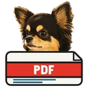
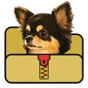
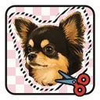

설치 없이,
바로 씁니다.
PDF · 압축 · 누끼 · 캡처 꾸미기 · 3D · 한글(HWP)을 이 화면 안에서 바로 처리해요.
🔒 파일은 서버로 올라가지 않아요

웅PDF
합치기 · 나누기 · 돌리기 · 페이지 지우기 · 그림으로 · 마크다운으로 · 암호
바로 쓰기 →
웅집
ZIP · 7Z · RAR 풀기, ZIP · 7Z 만들기(암호 가능)
바로 쓰기 →
웅누끼
사진 배경을 AI로 지우고 투명 PNG로 받기
바로 쓰기 →웅캡처 꾸미기
캡처한 그림에 펜 · 화살표 · 글자 · 모자이크
바로 쓰기 →
웅3D
SVG나 글자를 입체로 만들어 그림 · 영상 · 3D 파일로 받기
바로 쓰기 →웅HWP
한글(HWP · HWPX) 파일을 열어 고치고, 워드(DOCX) · PDF로 저장
바로 쓰기 →